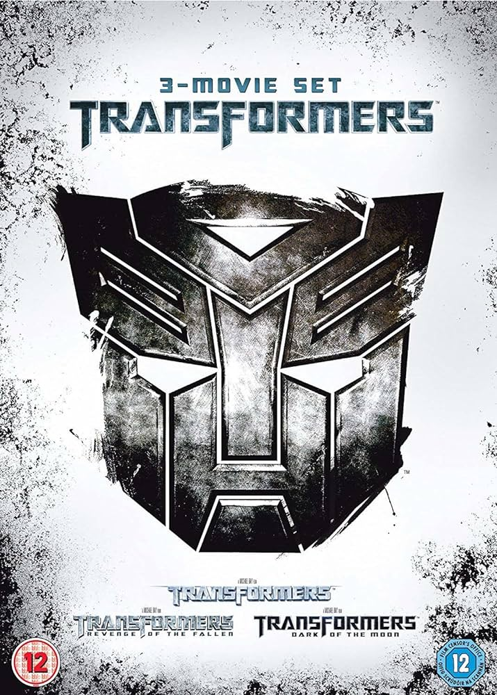
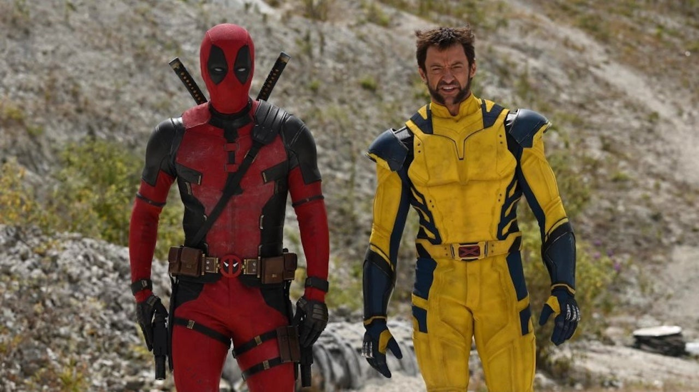

Após a batalha entre os Autobots e os Decepticons, que
arrasou Chicago, os gigantescos robôs alienígenas
desapareceram.
Atualmente, eles são caçados pelos humanos,
que não desejam passar por apuros novamente.
Porém, enquanto
a humanidade tenta se recuperar dessa terrível batalha, uma
nova ameaça paira sobre a Terra.

John Wick (Keanu Reeves) já foi um dos assassinos
mais temidos da cidade de Nova York, trabalhando em parceria com a máfia russa. Um dia, ele decide se aposentar, e neste período tem que lidar com a
triste morte de sua esposa. Vítima de uma doença grave, ela
já previa a sua própria morte, e deu de presente ao marido um
cachorro para cuidar em seu período de luto.
O filme sem título do Deadpool, mais conhecido como Deadpool 3, é um futuro filme de super-herói americano baseado no personagem de mesmo nome, da Marvel Comics, produzido pela Marvel Studios, Maximum Effort, e 21 Laps Entertainment, e distribuído pela Walt Disney Studios Motion Pictures. É o trigésimo quarto filme do Universo Cinematográfico Marvel (UCM) e a sequência de Deadpool (2016) e Deadpool 2 (2018).
O filme é um relato da fuga de seis soldados do exército indiano tomados como prisioneiros de guerra pelo exército aquistanês, durante a guerra. A história ocorre no Paquistão m 1977, seis anos após a Guerra Indo-Paquistanesa de 1971. O filme inicia em um campo com prisioneiros de guerra.
Sam (Melissa Barrera), Tara (Jenna Ortega), Mindy (Jasmin Savoy Brown) e Chad (Mason Gooding) estão fartos. Depois de sobreviver ao massacre final de Ghostface em Woodsboro, os quatro se mudam sem cerimônia para Nova York. Lá, os dois
irmãos querem começar uma nova vida, por assim dizer,
e deixar a pequena cidade e suas experiências traumáticas
para trás.